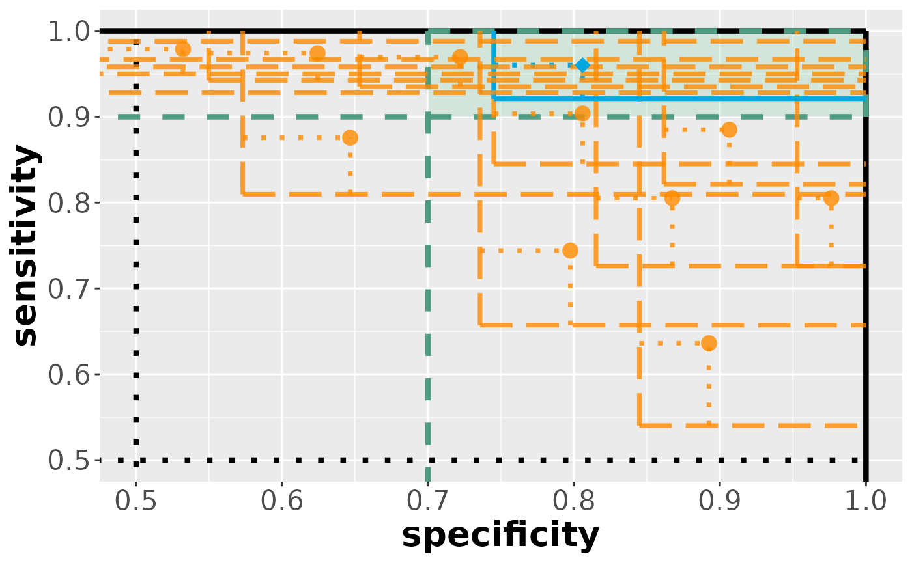

Real-world example: biomarker assessment and prediction model evaluation
Source:vignettes/example_wdbc.Rmd
example_wdbc.RmdThe goal of is this vignette is to illustrate the cases functionality by means of a real-world example focused on biomarker assessment and prediction model evaluation.
Preparation
Load the package:
## load packages:
library(dplyr)
#> Error in get(paste0(generic, ".", class), envir = get_method_env()) :
#> object 'type_sum.accel' not found
#>
#> Attaching package: 'dplyr'
#> The following objects are masked from 'package:stats':
#>
#> filter, lag
#> The following objects are masked from 'package:base':
#>
#> intersect, setdiff, setequal, union
library(cases)
library(glmnet)
#> Loading required package: Matrix
#> Loaded glmnet 4.1-8
library(splitstackshape)Introduction
We utilize the breast cancer wisconsin (diagnostic) data set.
# ?data_wdbc
data <- data_wdbc
dim(data)
#> [1] 569 31
table(data$diagnosis)
#>
#> 0 1
#> 357 212
## Missing values?
colSums(is.na(data)) # -> no missing values
#> diagnosis radius_mean texture_mean
#> 0 0 0
#> perimeter_mean area_mean smoothness_mean
#> 0 0 0
#> compactness_mean concavity_mean concave_points_mean
#> 0 0 0
#> symmetry_mean fractal_dimension_mean radius_sd
#> 0 0 0
#> texture_sd perimeter_sd area_sd
#> 0 0 0
#> smoothness_sd compactness_sd concavity_sd
#> 0 0 0
#> concave_points_sd symmetry_sd fractal_dimension_sd
#> 0 0 0
#> radius_peak texture_peak perimeter_peak
#> 0 0 0
#> area_peak smoothness_peak compactness_peak
#> 0 0 0
#> concavity_peak concave_points_peak symmetry_peak
#> 0 0 0
#> fractal_dimension_peak
#> 0
summary(data)
#> diagnosis radius_mean texture_mean perimeter_mean area_mean
#> 0:357 Min. : 6.981 Min. : 9.71 Min. : 43.79 Min. : 143.5
#> 1:212 1st Qu.:11.700 1st Qu.:16.17 1st Qu.: 75.17 1st Qu.: 420.3
#> Median :13.370 Median :18.84 Median : 86.24 Median : 551.1
#> Mean :14.127 Mean :19.29 Mean : 91.97 Mean : 654.9
#> 3rd Qu.:15.780 3rd Qu.:21.80 3rd Qu.:104.10 3rd Qu.: 782.7
#> Max. :28.110 Max. :39.28 Max. :188.50 Max. :2501.0
#> smoothness_mean compactness_mean concavity_mean concave_points_mean
#> Min. :0.05263 Min. :0.01938 Min. :0.00000 Min. :0.00000
#> 1st Qu.:0.08637 1st Qu.:0.06492 1st Qu.:0.02956 1st Qu.:0.02031
#> Median :0.09587 Median :0.09263 Median :0.06154 Median :0.03350
#> Mean :0.09636 Mean :0.10434 Mean :0.08880 Mean :0.04892
#> 3rd Qu.:0.10530 3rd Qu.:0.13040 3rd Qu.:0.13070 3rd Qu.:0.07400
#> Max. :0.16340 Max. :0.34540 Max. :0.42680 Max. :0.20120
#> symmetry_mean fractal_dimension_mean radius_sd texture_sd
#> Min. :0.1060 Min. :0.04996 Min. :0.1115 Min. :0.3602
#> 1st Qu.:0.1619 1st Qu.:0.05770 1st Qu.:0.2324 1st Qu.:0.8339
#> Median :0.1792 Median :0.06154 Median :0.3242 Median :1.1080
#> Mean :0.1812 Mean :0.06280 Mean :0.4052 Mean :1.2169
#> 3rd Qu.:0.1957 3rd Qu.:0.06612 3rd Qu.:0.4789 3rd Qu.:1.4740
#> Max. :0.3040 Max. :0.09744 Max. :2.8730 Max. :4.8850
#> perimeter_sd area_sd smoothness_sd compactness_sd
#> Min. : 0.757 Min. : 6.802 Min. :0.001713 Min. :0.002252
#> 1st Qu.: 1.606 1st Qu.: 17.850 1st Qu.:0.005169 1st Qu.:0.013080
#> Median : 2.287 Median : 24.530 Median :0.006380 Median :0.020450
#> Mean : 2.866 Mean : 40.337 Mean :0.007041 Mean :0.025478
#> 3rd Qu.: 3.357 3rd Qu.: 45.190 3rd Qu.:0.008146 3rd Qu.:0.032450
#> Max. :21.980 Max. :542.200 Max. :0.031130 Max. :0.135400
#> concavity_sd concave_points_sd symmetry_sd fractal_dimension_sd
#> Min. :0.00000 Min. :0.000000 Min. :0.007882 Min. :0.0008948
#> 1st Qu.:0.01509 1st Qu.:0.007638 1st Qu.:0.015160 1st Qu.:0.0022480
#> Median :0.02589 Median :0.010930 Median :0.018730 Median :0.0031870
#> Mean :0.03189 Mean :0.011796 Mean :0.020542 Mean :0.0037949
#> 3rd Qu.:0.04205 3rd Qu.:0.014710 3rd Qu.:0.023480 3rd Qu.:0.0045580
#> Max. :0.39600 Max. :0.052790 Max. :0.078950 Max. :0.0298400
#> radius_peak texture_peak perimeter_peak area_peak
#> Min. : 7.93 Min. :12.02 Min. : 50.41 Min. : 185.2
#> 1st Qu.:13.01 1st Qu.:21.08 1st Qu.: 84.11 1st Qu.: 515.3
#> Median :14.97 Median :25.41 Median : 97.66 Median : 686.5
#> Mean :16.27 Mean :25.68 Mean :107.26 Mean : 880.6
#> 3rd Qu.:18.79 3rd Qu.:29.72 3rd Qu.:125.40 3rd Qu.:1084.0
#> Max. :36.04 Max. :49.54 Max. :251.20 Max. :4254.0
#> smoothness_peak compactness_peak concavity_peak concave_points_peak
#> Min. :0.07117 Min. :0.02729 Min. :0.0000 Min. :0.00000
#> 1st Qu.:0.11660 1st Qu.:0.14720 1st Qu.:0.1145 1st Qu.:0.06493
#> Median :0.13130 Median :0.21190 Median :0.2267 Median :0.09993
#> Mean :0.13237 Mean :0.25427 Mean :0.2722 Mean :0.11461
#> 3rd Qu.:0.14600 3rd Qu.:0.33910 3rd Qu.:0.3829 3rd Qu.:0.16140
#> Max. :0.22260 Max. :1.05800 Max. :1.2520 Max. :0.29100
#> symmetry_peak fractal_dimension_peak
#> Min. :0.1565 Min. :0.05504
#> 1st Qu.:0.2504 1st Qu.:0.07146
#> Median :0.2822 Median :0.08004
#> Mean :0.2901 Mean :0.08395
#> 3rd Qu.:0.3179 3rd Qu.:0.09208
#> Max. :0.6638 Max. :0.20750
## define minimal acceptable criteria for specificity, sensitivity:
sp0 <- 0.7
se0 <- 0.9
benchmark <- c(sp0, se0)Scenario A: Biomarker assessment
pr <- seq(0, 1, 0.1)
quantile(data$area_peak, pr) # 500, 600, 700, 800, 900 ---> area
#> 0% 10% 20% 30% 40% 50% 60% 70% 80% 90%
#> 185.20 384.72 475.98 544.14 599.70 686.50 781.18 926.96 1269.00 1673.00
#> 100%
#> 4254.00
quantile(data$compactness_peak, pr) # 0.10, 0.15, 0.20, 0.25, 0.30 ---> compactness (perimeter^2 / area - 1.0)
#> 0% 10% 20% 30% 40% 50% 60% 70%
#> 0.027290 0.093676 0.125660 0.161400 0.184620 0.211900 0.251400 0.303960
#> 80% 90% 100%
#> 0.367060 0.447840 1.058000
quantile(data$concavity_peak, pr) # 0.10, 0.15, 0.20, 0.25, 0.30 ---> concavity (severity of concave portions of the contour)
#> 0% 10% 20% 30% 40% 50% 60% 70%
#> 0.000000 0.045652 0.091974 0.136880 0.177180 0.226700 0.286600 0.349920
#> 80% 90% 100%
#> 0.419540 0.571320 1.252000
cc <- c(
500, 600, 700, 800, 900,
0.10, 0.15, 0.20, 0.25, 0.30,
0.10, 0.15, 0.20, 0.25, 0.30
)
comp_bm <- data %>%
dplyr::select(area_peak, compactness_peak, concavity_peak) %>%
cases::categorize(cc, rep(1:3, each = 5)) %>%
cases::compare(labels = as.numeric(as.character(data$diagnosis)))
results_bm <- cases::evaluate(comp_bm,
benchmark = benchmark,
alternative = "greater", alpha = 0.025,
adj = "boot", regu = 1
)
#> Drawing 2000 'pairs' bootstrap samples...
results_bm
#> [cases] evaluation results:
#> $specificity
#> parameter hypothesis estimate lower upper tstat pval
#> 1 area_peak_500 <= 0.7 0.3645 0.2904 Inf -13.2067 1.0000
#> 2 area_peak_600 <= 0.7 0.6243 0.5497 Inf -2.9615 1.0000
#> 3 area_peak_700 <= 0.7 0.8059 0.7450 Inf 5.0713 0.0000
#> 4 area_peak_800 <= 0.7 0.9064 0.8616 Inf 13.4296 0.0000
#> 5 area_peak_900 <= 0.7 0.9763 0.9528 Inf 34.3804 0.0000
#> 6 compactness_peak_0.1 <= 0.7 0.1913 0.1308 Inf -24.5012 1.0000
#> 7 compactness_peak_0.15 <= 0.7 0.3980 0.3227 Inf -11.6880 1.0000
#> 8 compactness_peak_0.2 <= 0.7 0.6466 0.5731 Inf -2.1148 1.0000
#> 9 compactness_peak_0.25 <= 0.7 0.7975 0.7356 Inf 4.5962 0.0000
#> 10 compactness_peak_0.3 <= 0.7 0.8925 0.8448 Inf 11.7707 0.0000
#> 11 concavity_peak_0.1 <= 0.7 0.3422 0.2691 Inf -14.2900 1.0000
#> 12 concavity_peak_0.15 <= 0.7 0.5321 0.4553 Inf -6.3748 1.0000
#> 13 concavity_peak_0.2 <= 0.7 0.7221 0.6531 Inf 0.9333 0.7945
#> 14 concavity_peak_0.25 <= 0.7 0.8059 0.7450 Inf 5.0713 0.0000
#> 15 concavity_peak_0.3 <= 0.7 0.8673 0.8151 Inf 9.3454 0.0000
#> reject pval_all reject_all
#> 1 FALSE 1.0000 FALSE
#> 2 FALSE 1.0000 FALSE
#> 3 TRUE 0.0005 TRUE
#> 4 TRUE 1.0000 FALSE
#> 5 TRUE 1.0000 FALSE
#> 6 FALSE 1.0000 FALSE
#> 7 FALSE 1.0000 FALSE
#> 8 FALSE 1.0000 FALSE
#> 9 TRUE 1.0000 FALSE
#> 10 TRUE 1.0000 FALSE
#> 11 FALSE 1.0000 FALSE
#> 12 FALSE 1.0000 FALSE
#> 13 FALSE 0.7945 FALSE
#> 14 TRUE 0.9830 FALSE
#> 15 TRUE 1.0000 FALSE
#>
#> $sensitivity
#> parameter hypothesis estimate lower upper tstat pval reject
#> 1 area_peak_500 <= 0.9 0.9977 0.9880 Inf 29.5193 0.0000 TRUE
#> 2 area_peak_600 <= 0.9 0.9742 0.9426 Inf 6.8419 0.0000 TRUE
#> 3 area_peak_700 <= 0.9 0.9601 0.9211 Inf 4.4912 0.0005 TRUE
#> 4 area_peak_800 <= 0.9 0.8850 0.8214 Inf -0.6888 1.0000 FALSE
#> 5 area_peak_900 <= 0.9 0.8052 0.7262 Inf -3.5027 1.0000 FALSE
#> 6 compactness_peak_0.1 <= 0.9 0.9836 0.9582 Inf 9.6161 0.0000 TRUE
#> 7 compactness_peak_0.15 <= 0.9 0.9648 0.9280 Inf 5.1422 0.0000 TRUE
#> 8 compactness_peak_0.2 <= 0.9 0.8756 0.8098 Inf -1.0821 1.0000 FALSE
#> 9 compactness_peak_0.25 <= 0.9 0.7441 0.6571 Inf -5.2256 1.0000 FALSE
#> 10 compactness_peak_0.3 <= 0.9 0.6362 0.5402 Inf -8.0227 1.0000 FALSE
#> 11 concavity_peak_0.1 <= 0.9 0.9883 0.9668 Inf 11.9886 0.0000 TRUE
#> 12 concavity_peak_0.15 <= 0.9 0.9789 0.9502 Inf 8.0234 0.0000 TRUE
#> 13 concavity_peak_0.2 <= 0.9 0.9695 0.9352 Inf 5.9095 0.0000 TRUE
#> 14 concavity_peak_0.25 <= 0.9 0.9038 0.8449 Inf 0.1863 0.9830 FALSE
#> 15 concavity_peak_0.3 <= 0.9 0.8052 0.7262 Inf -3.5027 1.0000 FALSE
#> pval_all reject_all
#> 1 1.0000 FALSE
#> 2 1.0000 FALSE
#> 3 0.0005 TRUE
#> 4 1.0000 FALSE
#> 5 1.0000 FALSE
#> 6 1.0000 FALSE
#> 7 1.0000 FALSE
#> 8 1.0000 FALSE
#> 9 1.0000 FALSE
#> 10 1.0000 FALSE
#> 11 1.0000 FALSE
#> 12 1.0000 FALSE
#> 13 0.7945 FALSE
#> 14 0.9830 FALSE
#> 15 1.0000 FALSE
visualize(results_bm)
Scenario B: Prediction model evaluation
## data splitting:
set.seed(1337)
split <- stratified(data, c("diagnosis"), 1 / 3, bothSets = TRUE)
val <- split[[1]] %>% as.data.frame()
trn <- split[[2]] %>% as.data.frame()
dim(trn)
#> [1] 379 31
dim(val)
#> [1] 190 31
table(val$diagnosis)
#>
#> 0 1
#> 119 71
## train example model
mod <- glmnet(x = trn[, -1], y = trn[, 1], family = "binomial", alpha = 0.25)
str(mod, 0)
#> List of 13
#> - attr(*, "class")= chr [1:2] "lognet" "glmnet"
set.seed(1337)
## define hyperparameter values for L1/L2 penalty mixing parameter (alpha):
aa <- c(0, 0.25, 0.5, 0.75, 1)
## train models and create predictions:
pred_pm <- sapply(aa, function(alpha) {
mod_pm <- cv.glmnet(
x = as.matrix(trn[, -1]), y = trn[, 1],
family = "binomial",
type.measure = "class",
alpha = alpha
)
message(paste0("cv.glmnet (alpha = ", alpha, "):"))
print(mod_pm)
message("+++++")
predict(mod_pm, as.matrix(val[, -1]), type = "response")
})
#> cv.glmnet (alpha = 0):
#>
#> Call: cv.glmnet(x = as.matrix(trn[, -1]), y = trn[, 1], type.measure = "class", family = "binomial", alpha = alpha)
#>
#> Measure: Misclassification Error
#>
#> Lambda Index Measure SE Nonzero
#> min 0.03847 100 0.01847 0.006853 30
#> 1se 0.04634 98 0.02375 0.008289 30
#> +++++
#> cv.glmnet (alpha = 0.25):
#>
#> Call: cv.glmnet(x = as.matrix(trn[, -1]), y = trn[, 1], type.measure = "class", family = "binomial", alpha = alpha)
#>
#> Measure: Misclassification Error
#>
#> Lambda Index Measure SE Nonzero
#> min 0.004383 64 0.01055 0.004299 27
#> 1se 0.012195 53 0.01319 0.005888 23
#> +++++
#> cv.glmnet (alpha = 0.5):
#>
#> Call: cv.glmnet(x = as.matrix(trn[, -1]), y = trn[, 1], type.measure = "class", family = "binomial", alpha = alpha)
#>
#> Measure: Misclassification Error
#>
#> Lambda Index Measure SE Nonzero
#> min 0.004612 56 0.01055 0.008061 22
#> 1se 0.012834 45 0.01847 0.008869 19
#> +++++
#> cv.glmnet (alpha = 0.75):
#>
#> Call: cv.glmnet(x = as.matrix(trn[, -1]), y = trn[, 1], type.measure = "class", family = "binomial", alpha = alpha)
#>
#> Measure: Misclassification Error
#>
#> Lambda Index Measure SE Nonzero
#> min 0.002802 57 0.007916 0.004023 19
#> 1se 0.009391 44 0.010554 0.005824 18
#> +++++
#> cv.glmnet (alpha = 1):
#>
#> Call: cv.glmnet(x = as.matrix(trn[, -1]), y = trn[, 1], type.measure = "class", family = "binomial", alpha = alpha)
#>
#> Measure: Misclassification Error
#>
#> Lambda Index Measure SE Nonzero
#> min 0.003672 51 0.01319 0.005888 13
#> 1se 0.005328 47 0.01847 0.008822 11
#> +++++
colnames(pred_pm) <- paste0("en", aa * 100)
head(pred_pm)
#> en0 en25 en50 en75 en100
#> [1,] 0.9747700 0.9961507 0.9938921 0.9964515 0.9992168
#> [2,] 0.9996722 0.9999897 0.9999674 0.9999877 0.9999995
#> [3,] 0.9142164 0.9763833 0.9698399 0.9816259 0.9949924
#> [4,] 0.9955105 0.9995248 0.9991571 0.9995259 0.9999234
#> [5,] 0.9559590 0.9885991 0.9807955 0.9856935 0.9949629
#> [6,] 0.7573470 0.7981572 0.7785671 0.7485468 0.6770751
## define cutpoints (probability scale):
cc <- rep(seq(0.1, 0.5, 0.1), 5)
mm <- rep(1:5, each = 5)
## create predictions:
comp_pm <- pred_pm %>%
cases::categorize(cc, mm) %>%
cases::compare(labels = as.numeric(as.character(val$diagnosis)))
str(comp_pm, 1)
#> List of 2
#> $ specificity:'data.frame': 119 obs. of 25 variables:
#> $ sensitivity:'data.frame': 71 obs. of 25 variables:
## conduct statistical analysis:
set.seed(1337)
results_pm <- cases::evaluate(comp_pm,
benchmark = benchmark,
alternative = "greater", alpha = 0.025,
adj = "boot", regu = 1
)
#> Drawing 2000 'pairs' bootstrap samples...
str(results_pm, 1)
#> List of 2
#> $ specificity:'data.frame': 25 obs. of 10 variables:
#> $ sensitivity:'data.frame': 25 obs. of 10 variables:
#> - attr(*, "class")= chr [1:2] "list" "cases_results"
#> - attr(*, "n_obs")= Named int [1:2] 119 71
#> ..- attr(*, "names")= chr [1:2] "specificity" "sensitivity"
#> - attr(*, "n_params")= int 25
#> - attr(*, "n_groups")= int 2
#> - attr(*, "critval")= num [1:2] -3.63 Inf
#> - attr(*, "alpha_adj")= num 0.0095
#> - attr(*, "call")=List of 8
results_pm %>% lapply(filter, reject_all)
#> $specificity
#> parameter hypothesis estimate lower upper tstat pval reject
#> 1 en25_0.1 <= 0.7 0.8541667 0.7375908 Inf 4.804890 0.0095 TRUE
#> 2 en50_0.1 <= 0.7 0.8541667 0.7375908 Inf 4.804890 0.0095 TRUE
#> 3 en75_0.1 <= 0.7 0.8708333 0.7600558 Inf 5.603025 0.0045 TRUE
#> 4 en100_0.1 <= 0.7 0.8875000 0.7831315 Inf 6.527299 0.0040 TRUE
#> pval_all reject_all
#> 1 0.0095 TRUE
#> 2 0.0095 TRUE
#> 3 0.0045 TRUE
#> 4 0.0095 TRUE
#>
#> $sensitivity
#> parameter hypothesis estimate lower upper tstat pval reject
#> 1 en25_0.1 <= 0.9 0.9791667 0.9184304 Inf 4.735830 0.0095 TRUE
#> 2 en50_0.1 <= 0.9 0.9930556 0.9577417 Inf 9.574106 0.0000 TRUE
#> 3 en75_0.1 <= 0.9 0.9930556 0.9577417 Inf 9.574106 0.0000 TRUE
#> 4 en100_0.1 <= 0.9 0.9791667 0.9184304 Inf 4.735830 0.0095 TRUE
#> pval_all reject_all
#> 1 0.0095 TRUE
#> 2 0.0095 TRUE
#> 3 0.0045 TRUE
#> 4 0.0095 TRUE
visualize(results_pm)References
- Westphal M, Zapf A. Statistical inference for diagnostic test accuracy studies with multiple comparisons. Statistical Methods in Medical Research. 2024;0(0). doi:10.1177/09622802241236933
- “Breast Cancer Wisconsin (Diagnostic) Data Set†at the UCI Machine Learning Repository: https://archive.ics.uci.edu/ml/datasets/breast+cancer+wisconsin+(diagnostic)